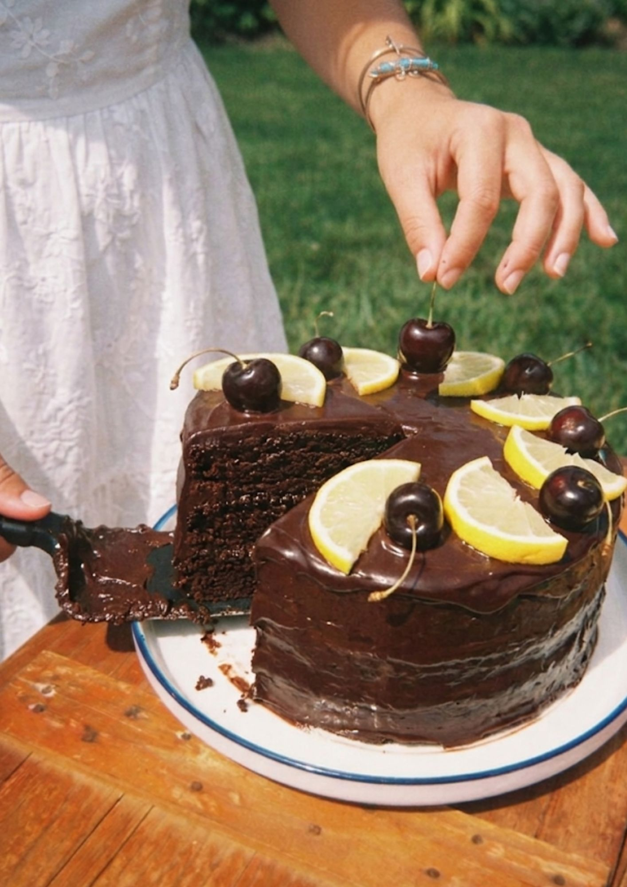

Cakes worth remembering
Katso kakut
Tilaa juuri sinun hetkeesi
Tilaa tuotteet suoraan verkkokaupasta – gluteenittomat, laktoosittomat ja vegaaniset vaihtoehdot huomioiden.
Isompaan tilaisuuteen, häihin tai cateringiin räätälöimme kokonaisuuden toiveidesi mukaan.
Tutustu verkkokauppaamme
Saatavilla on myös erikoisruokavaliolle sopivia vaihtoehtoja – gluteenittomia, laktoosittomia sekä vegaanisia kakkuja.
Hetkiä, jotka jäivät mieleen
“Kaunein kakku, jonka olemme saaneet. Vieraat kyselivät, mistä se oli.”
— Anni & Joonas, häät
“Palvelu oli rauhallista ja henkilökohtaista. Lopputulos ylitti toiveemme.”
— Maria, 50-vuotisjuhlat
“Juuri sellainen kuin halusimme – ei yhtään geneerinen.”
— Petri, perhejuhla
“Maku oli uskomaton ja koristelu juuri teemamme mukainen. Suosittelen lämpimästi.”
— Laura, valmistujaiset
“Tilaus sujui vaivattomasti ja kakku oli valmiina ajallaan. Kiitos sydämestä.”
— Mikko, syntymäpäivät
“Gluteeniton kakku, joka oikeasti maistui hyvältä. Harvinaista ja ihanaa.”
— Sanna, ristiäiset


Yhdessä teemme onnesta jaettavaa
Jokainen kakku on osa jonkun juhlaa. Me leivomme hetkiä, jotka jaetaan rakkaiden kesken – käsin, pienissä erissä, sydämellä.
Tutustu meihin lisää